Digital and printed report with maps, photos, illustrations and infographics.
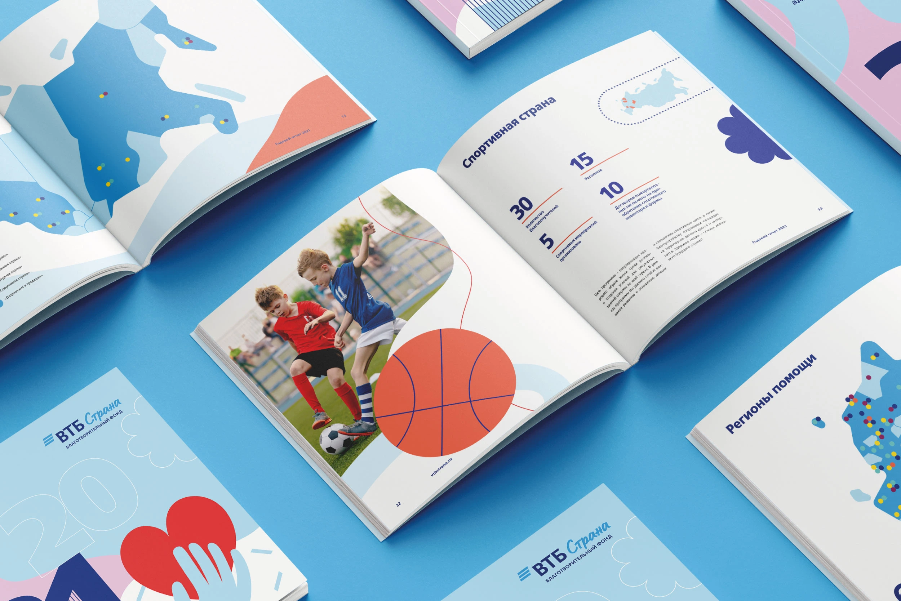
VTB Strana is a charitable foundation that since 2006, has been providing assistance to orphans and children left without parental care who live in residential institutions and orphanages. In 2021 the foundation came with a idea of a digital and printed annual report. The concept of the report is built on smooth and simple bright color illustrations and infographics to support the idea of kindness and childhood.
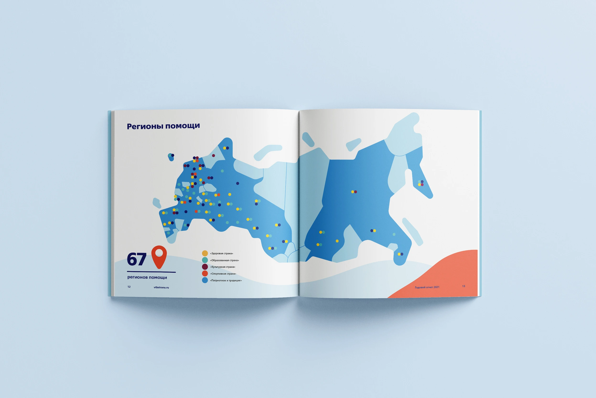
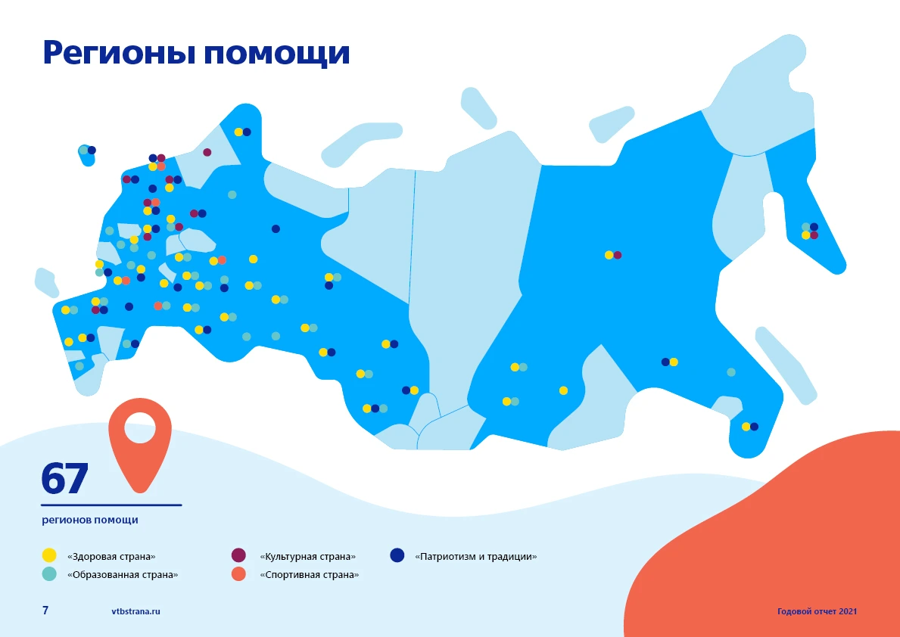
One of the tasks was to create a map with regions and charity programs they connected with, and highlight this map in every programm in the report. I created a main map and the small ones, where regions are highlighted with one color. Each programm has it's own color.
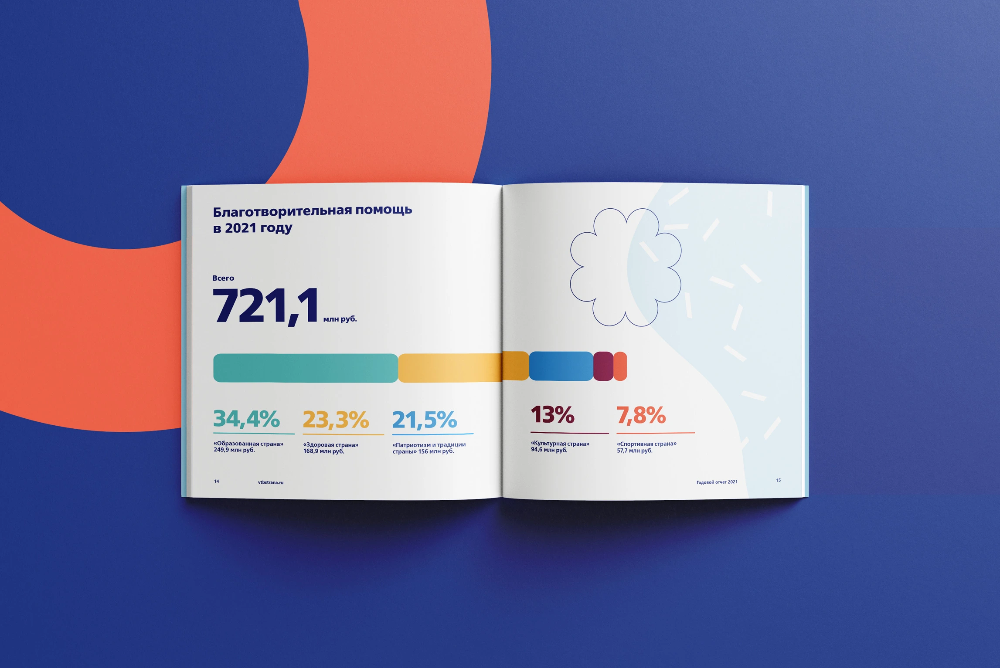
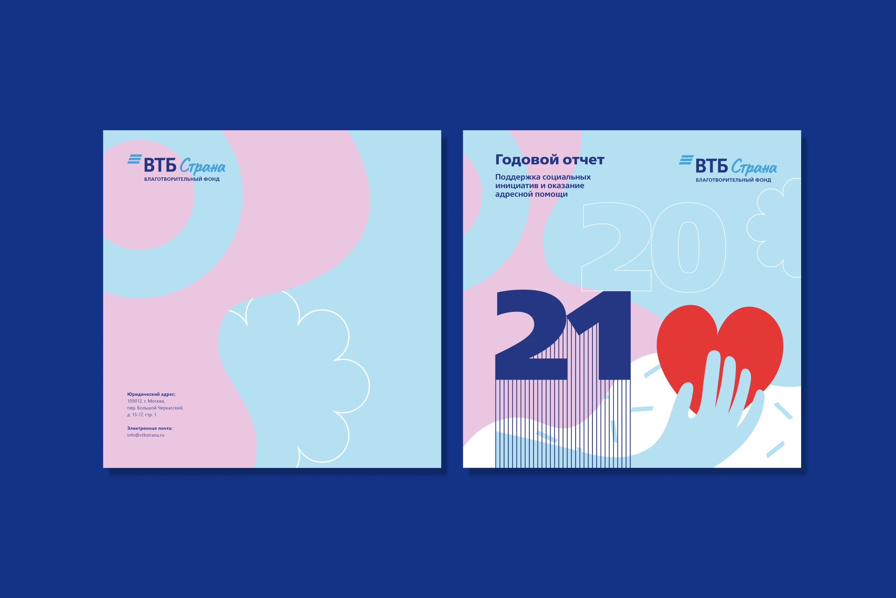
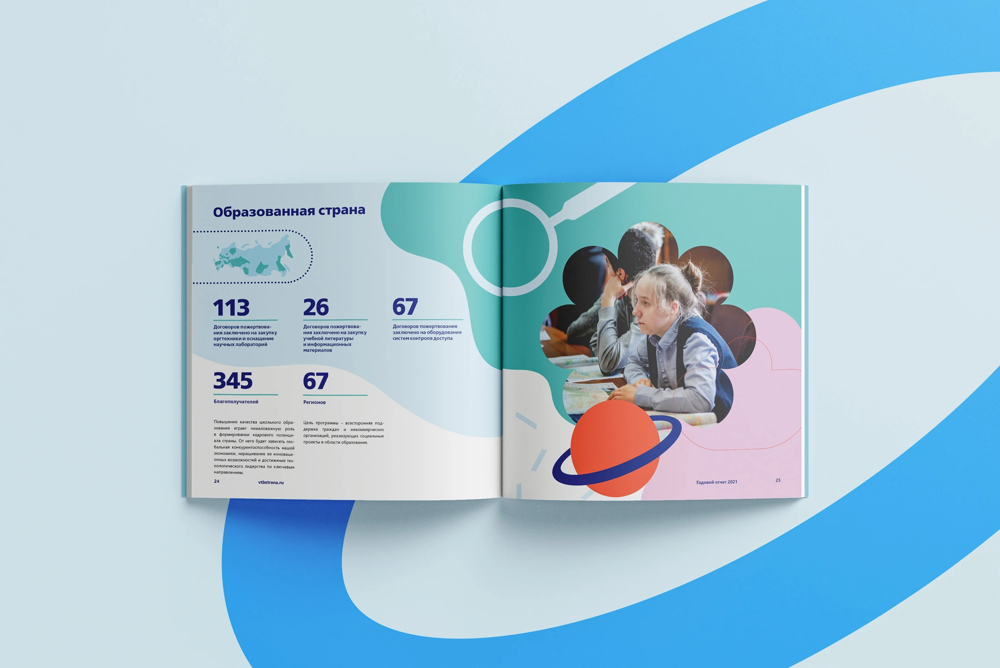
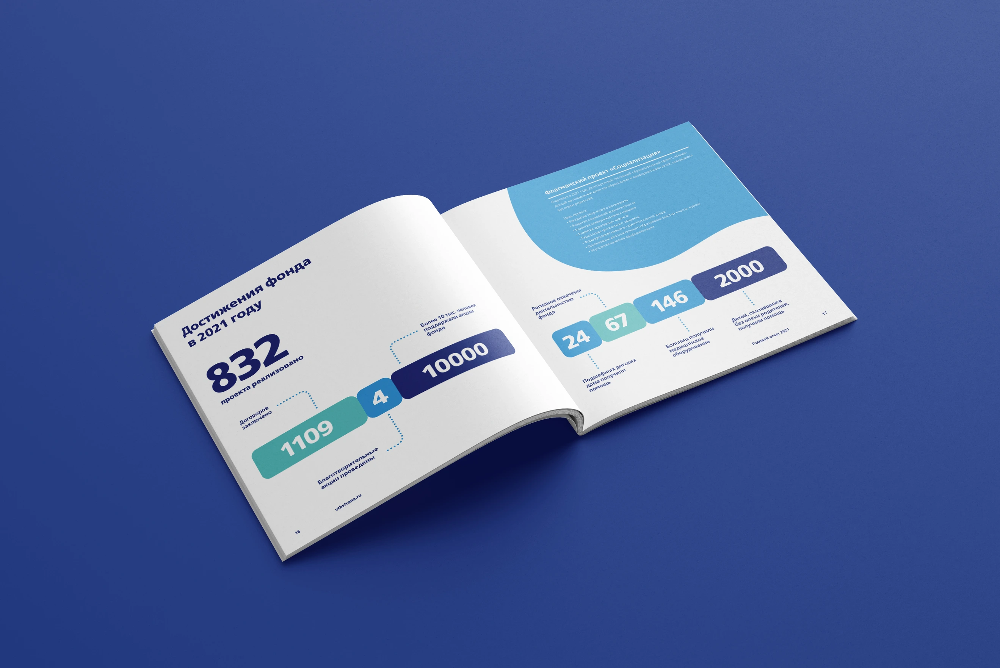
Check out the animated version here. This version I made in Indesign by adding simple animation on every page.
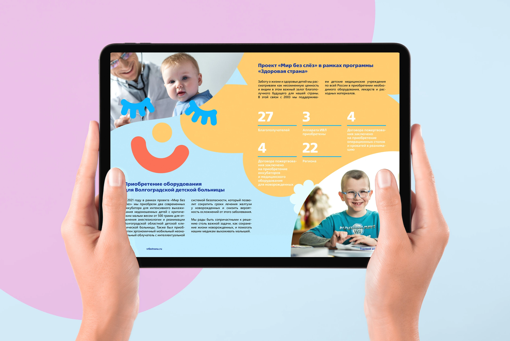
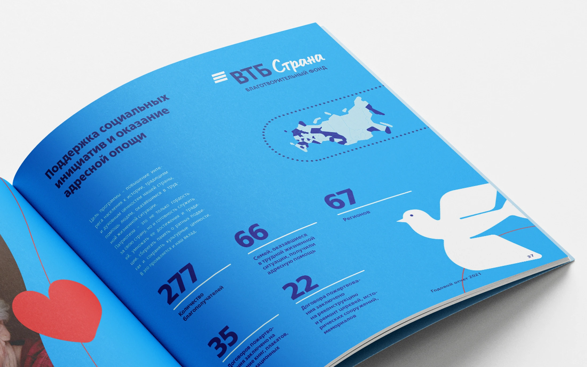
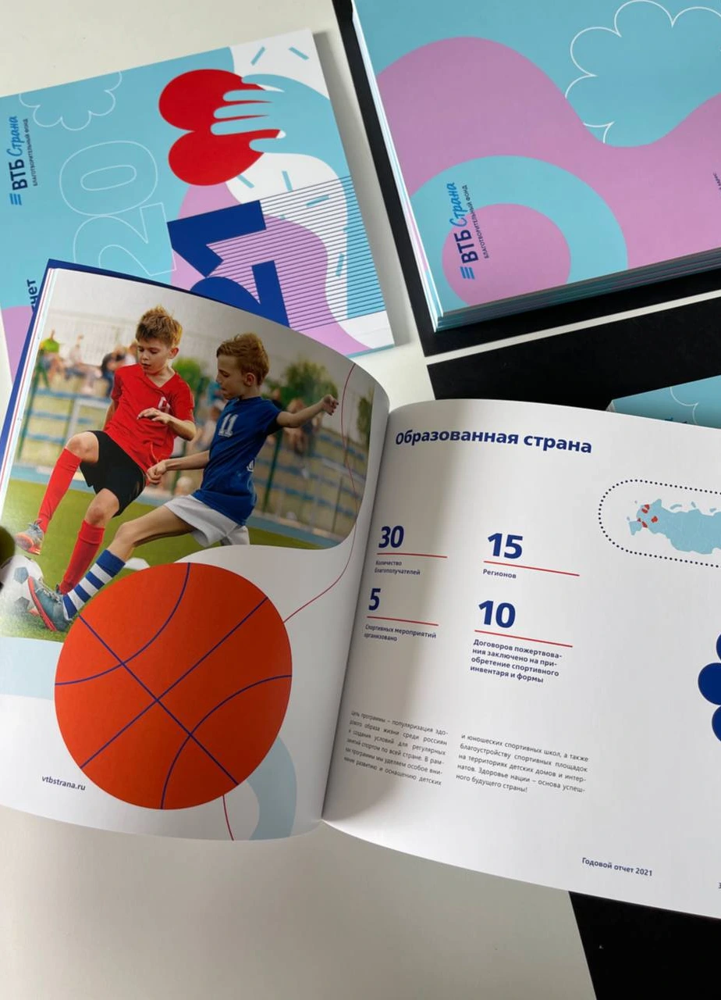
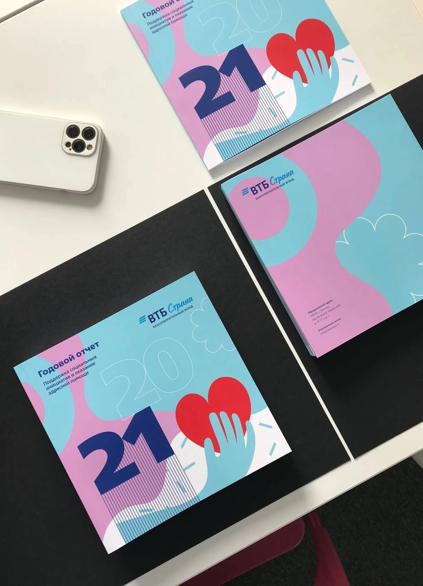